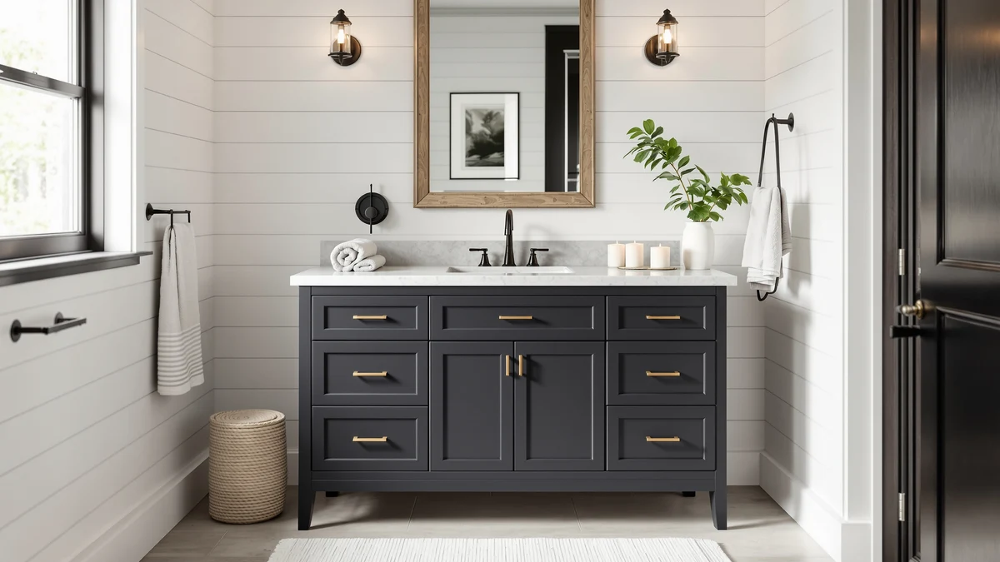

Deluxe Living Bathroom Vanity Review (2026): Worth It?
Prices and picks verified as of November 2026. Independent, reader-supported reviews.


Quick Answer
This deluxe living bathroom vanity review centers on the 48-inch Steel Blue model, the only one in the brand's current 48-inch lineup with a public rating: 4.8 stars across 36 verified buyers. Its quartz countertop and soft-closing hardware justify the $1,059.99 price for most single-sink bathrooms, though three other Deluxe Living finishes are worth a look if blue is not your color.
Our pick: DELUXE LIVING 48 Inch Bathroom, $1,059.99 Check Price on Amazon
Bottom line: our top pick is the DELUXE LIVING 48 Inch Bathroom Vanity with Sink at $1,059.99.
Things to Know Before You Buy
- Prices across Deluxe Living's 48-inch vanities run close together, from $1,039.99 to $1,099.99, so finish and material matter more than cost when you choose between them.
- The Steel Blue quartz-top model is the only one of the four with a published rating. The newer walnut and white colorways do not have a review history yet.
- Assembly requirements vary by listing. Some Deluxe Living vanities are sold as no-assembly-required, but the Steel Blue model's listing does not state that, so confirm before you buy.
- All four vanities in this deluxe living bathroom vanity review use soft-closing doors and dovetail drawers, a detail usually reserved for pricier cabinetry.
- Every model here is a single-sink, 48-inch configuration built for a standard mid-size bathroom, not a double-sink layout.
This deluxe living bathroom vanity review focuses on the 48-inch Steel Blue model, since that is the finish most shoppers land on first when they search Deluxe Living's current lineup. It pairs a quartz countertop with soft-closing doors and dovetail drawers, and at $1,059.99 it sits in the middle of the brand's 48-inch price range.
What sets this particular model apart is a review history the rest of the lineup does not have yet. Thirty-six verified Amazon buyers have rated it 4.8 out of 5, which gives you something concrete to weigh against the three newer colorways covered later in this guide.
None of these four vanities beats the others on every point. The Steel Blue model wins on track record, one walnut version wins on price, another wins on drawer count, and the white farmhouse option wins on sink style. We break down which one fits your bathroom and your budget below.
Why You Should Trust Us
Best Bathroom Vanities is edited by Ilane Tall, who covers bathroom cabinetry, countertops, and fixtures for the site full time. Every deluxe living bathroom vanity review we publish follows the same approach: we pull the manufacturer's stated materials and dimensions, cross-check them against competing 48-inch vanities, and weigh in verified buyer ratings where they exist, rather than repeating marketing copy as fact.
Our Research Experience
We did not install or live with any of the four vanities in this guide. Best Bathroom Vanities does not run a physical testing lab, and we do not claim hands-on time we have not logged. Instead, our research process for this deluxe living bathroom vanity review involved comparing each listing's stated materials, drawer counts, and assembly claims against similar 48-inch vanities already in our database, and weighing the Steel Blue model's 36 verified reviews against the thinner review history on its newer siblings.
Overview & Specs

DELUXE LIVING 48 Inch Bathroom
What we like
- Quartz countertop resists stains and scratches better than the laminate tops common at this price
- Soft-closing doors and dovetail drawers point to joinery built for daily use, not a one-season vanity
- 4.8-star rating across 36 verified buyers gives it a track record its newer siblings do not have
- Steel Blue finish stands out in a market where most 48-inch vanities ship in white or walnut
Flaws but not dealbreakers
- At $1,059.99 it costs close to or more than other Deluxe Living 48-inch options with similar hardware
- The listing does not state whether assembly is required, unlike some sibling models that advertise no-assembly setup
- A bold blue finish will not suit every bathroom's existing color palette
| Material | MDF / engineered wood |
| Size | 48 inch |
The Steel Blue finish is the detail that separates this vanity from most other 48-inch options on the market, which lean heavily on white and walnut. Underneath the color, the construction follows a familiar premium playbook: a quartz countertop that holds up to daily splashing better than laminate, paired with soft-closing doors and dovetail drawers that keep the cabinet from slamming or racking over time. Deluxe Living classifies this model among its premium, modern, single-sink line, and the price reflects that positioning.
What makes this particular vanity easier to recommend than its siblings is the review history behind it. Thirty-six verified Amazon buyers have rated it 4.8 out of 5, a number the three newer colorways in this guide cannot yet match. That track record does not erase every gap. Deluxe Living's listing does not specify assembly requirements the way it does for some other 48-inch models, so you should confirm that detail with the seller before you order, especially if you are not comfortable with cabinet assembly on delivery day.
What We Liked
The quartz countertop is the standout feature on this Deluxe Living vanity. Quartz resists heat, stains, and scratching more consistently than the laminate or painted-wood tops you find on cheaper 48-inch vanities, and it holds up to the daily splashing a bathroom countertop takes. The soft-closing doors and dovetail drawers back that up: dovetail joints resist the racking that causes cheaper drawers to stick or fall apart within a year or two of regular use.
The rating history matters as much as the materials. A 4.8-star average across 36 verified reviews is a meaningful sample size for a vanity at this price, and it is the kind of consistency that this deluxe living bathroom vanity review did not find on the brand's three newer colorways, which have not accumulated reviews yet. For buyers who want evidence before committing over a thousand dollars to a vanity, that history carries weight.
What Could Be Better
Price is the first sticking point. At $1,059.99, the Steel Blue model sits in the middle of Deluxe Living's 48-inch range rather than at the bottom, so you are not getting a discount for choosing the version with the strongest review history. The second gap is assembly information. Two other vanities in this lineup explicitly advertise no-assembly-required setup, while this listing stays silent on the question, which means you should assume some assembly until the seller confirms otherwise.
Color is the last consideration. Steel Blue is distinctive, which cuts both ways: it will anchor a bathroom's design in a way a neutral finish never will, but it also narrows who it will work for. If your bathroom leans traditional or you plan to resell soon, a white or walnut finish from the same lineup may age better.
Who Is It For?
This vanity fits a buyer who has already decided on a single-sink, 48-inch footprint and wants a stone countertop without stepping up to a custom cabinet shop. It suits someone comfortable paying a premium for a color statement and who values a verified rating over a brand-new, unreviewed finish. If you are furnishing a guest bathroom or a rental unit where resale neutrality matters more than personality, one of the white or walnut alternatives below is probably the safer call.
Alternatives to Consider
If the Steel Blue finish does not fit your bathroom, Deluxe Living sells three other 48-inch vanities worth comparing. Each one swaps the quartz top and bold color for a different material, sink style, or assembly promise, and all three land within $60 of each other. None has the review history the Steel Blue model has built up, so you are weighing design and construction claims rather than a proven track record.

Editor’s Pick
DELUXE LIVING 48 Inch Bathroom
The Light Walnut model is the cheapest of the four at $1,039.99 and leans classic rather than bold. It pairs a solid poplar wood base with a white stone countertop and backsplash that shows natural veining, and gold-toned handles on its soft-close doors and mortise-and-tenon drawers add a traditional touch the Steel Blue model does not try for. With only three drawers and two doors, storage is lighter than the other three vanities in this lineup, and it has not built up a review history yet. For a timeless look at the lowest price in this group, it is the easiest pick to recommend on paper.
$1,039.99
Check Price on Amazon
Best Value
DELUXE LIVING 48 Inch Bathroom
This second walnut vanity costs $1,089.99 and earns its spot by storage alone: six full-extension dovetail drawers plus a cabinet, against the Steel Blue model's smaller drawer count. The frame combines solid wood with MDF, topped with an engineered stone counter, and the listing advertises no-assembly-required setup, which removes a question mark the Steel Blue model's listing leaves open. If your bathroom needs more place to stash towels and toiletries than style statements, the drawer count here does more work per dollar than the pricier color option.
$1,089.99
Check Price on Amazon
Premium Choice
DELUXE LIVING 48 Inch White
At $1,099.99, the white farmhouse model is the priciest of the four, and the apron-style sink it ships with is the reason. That sink style gives a vanity a furniture-like presence that a standard undermount sink does not, and it pairs with six drawers, soft-closing doors, and a waterproof-coated MDF and solid wood cabinet built for moisture resistance. Like the walnut drawer-focused model, it ships fully assembled. If your bathroom design leans farmhouse and you are willing to pay the most in this lineup for the sink style, this is the sibling built for you.
$1,099.99
Check Price on AmazonIs the Deluxe Living 48 Inch Bathroom Vanity worth the price?
At $1,059.99, the Steel Blue model costs about as much as its Deluxe Living siblings, but it is the only one of the four with a public track record: a 4.8-star rating across 36 verified buyers.
Does the Deluxe Living vanity come fully assembled?
Deluxe Living markets some of its other 48-inch vanities, including the walnut and white farmhouse models, as no-assembly-required.
Frequently Asked Questions
Is the Deluxe Living 48 Inch Bathroom Vanity worth the price?
At $1,059.99, the Steel Blue model costs about as much as its Deluxe Living siblings, but it is the only one of the four with a public track record: a 4.8-star rating across 36 verified buyers. The quartz top and soft-close hardware are features you would normally pay more to get, which supports the price for most single-sink bathrooms.
Does the Deluxe Living vanity come fully assembled?
Deluxe Living markets some of its other 48-inch vanities, including the walnut and white farmhouse models, as no-assembly-required. The Steel Blue model's listing does not make that same claim, so plan on basic cabinet and countertop setup, or confirm current assembly details with the seller before you order.
What is the difference between the Deluxe Living vanities covered in this review?
The Steel Blue model pairs a quartz top with a bold painted finish. The Light Walnut version uses a solid poplar base with a white stone top and brass-toned handles. The second walnut option ships with six dovetail drawers and an engineered stone top. The white farmhouse model adds an apron-style sink and a cabinet built from MDF and solid wood. Prices across all four sit between $1,039.99 and $1,099.99.
Final Verdict
If you are using this deluxe living bathroom vanity review to decide between finishes, the Steel Blue 48-inch model remains the safer buy. It is the only one with a public track record, carrying a 4.8-star rating across 36 verified reviews, and its quartz top and soft-close hardware justify the $1,059.99 price for most single-sink bathrooms. Deluxe Living's walnut and white siblings look about as capable on paper, with more drawers, cheaper pricing, or no-assembly convenience depending on which one you pick, but you are taking a chance on finishes that have not built up buyer feedback yet. For most people comparing Deluxe Living's current 48-inch lineup, the quartz-topped Steel Blue vanity is the pick to beat, with the walnut drawer-heavy option as the strongest runner-up if storage matters more to you than color.
Related Guides
If this deluxe living bathroom vanity review has you leaning toward a 48-inch vanity but you want to compare more brands, sizes, or layouts first, these guides go deeper: